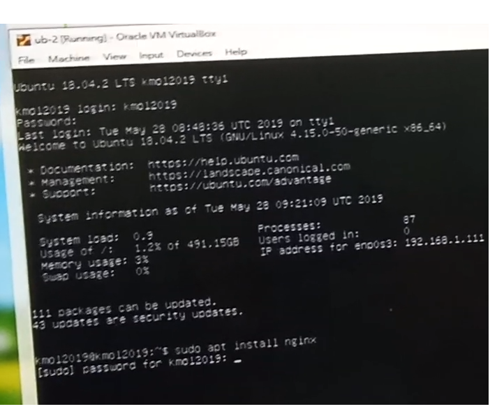
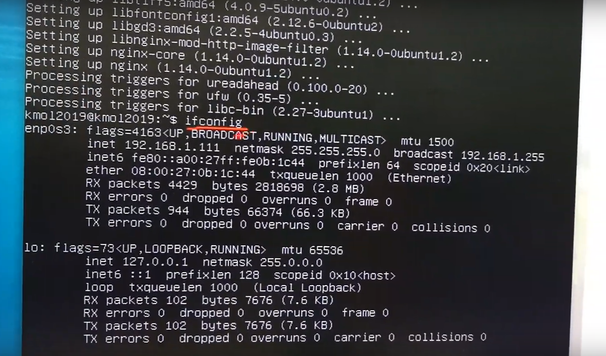
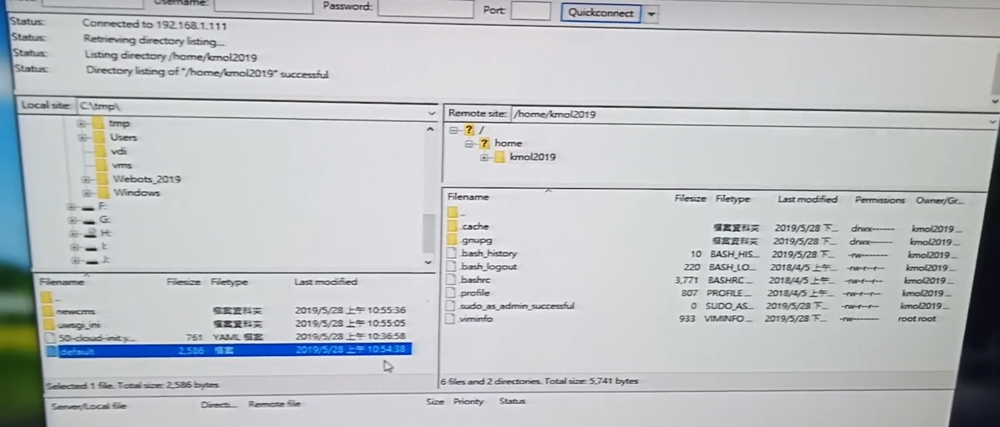

1.以 sudo apt install nginx 安裝 nginx WWW 伺服器

2.以 ifconfig 查 Ubuntu 伺服器的 IP, 測試 nginx 伺服器是否可以連線

3.以 Windows 10 下的 Filezilla client, 將編輯好的 nginx 設定檔案送到 Ubuntu

4.利用 Ubuntu 指令將設定檔案搬至設定位置後, 以 /etc/init.d/nginx restart 重新啟動